← DESIGN
GYEOL
"유자로 시작해, 바다로 끝납니다." 향 하나로 승부하는 바디워시를 코발트 블루와 버터 아이보리 두 색으로 풀어낸 상세페이지입니다. 첫 화면, 모델 컷, 펌핑 장면은 영상으로 넣었습니다.
- TYPE
- 상세페이지
- CATEGORY
- 바디워시 · 뷰티
- SIZE
- 860px · 11섹션
- MOTION
- 영상 3컷
가상 브랜드 작업입니다. 브랜드·제품 사양·수치는 모두 예시입니다.
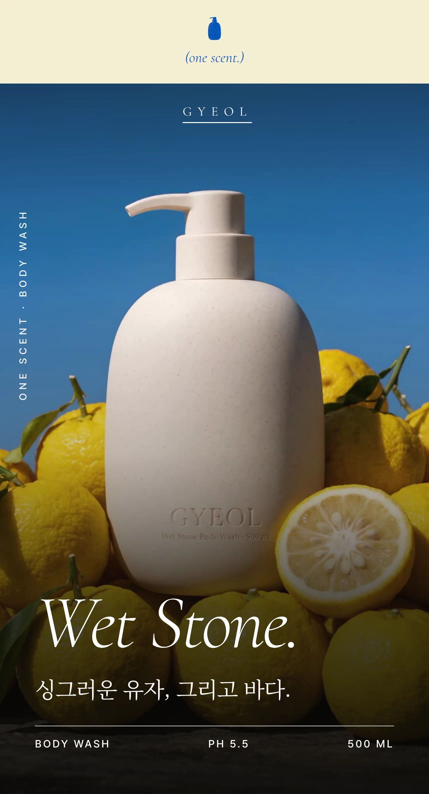
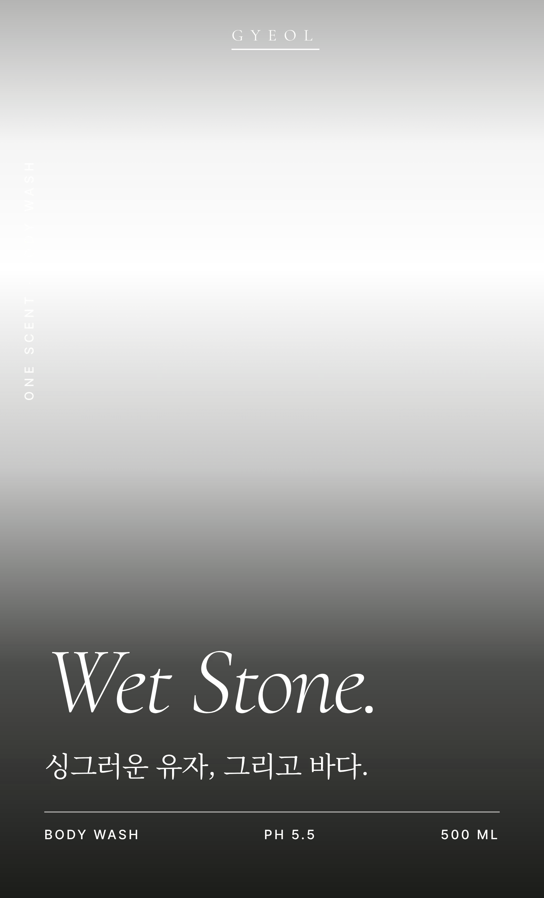
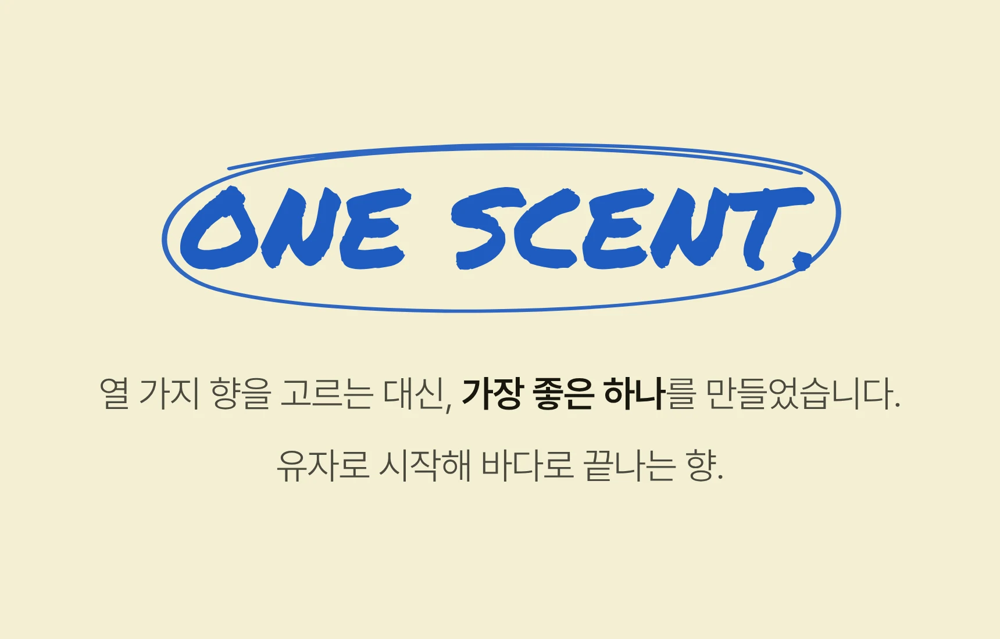
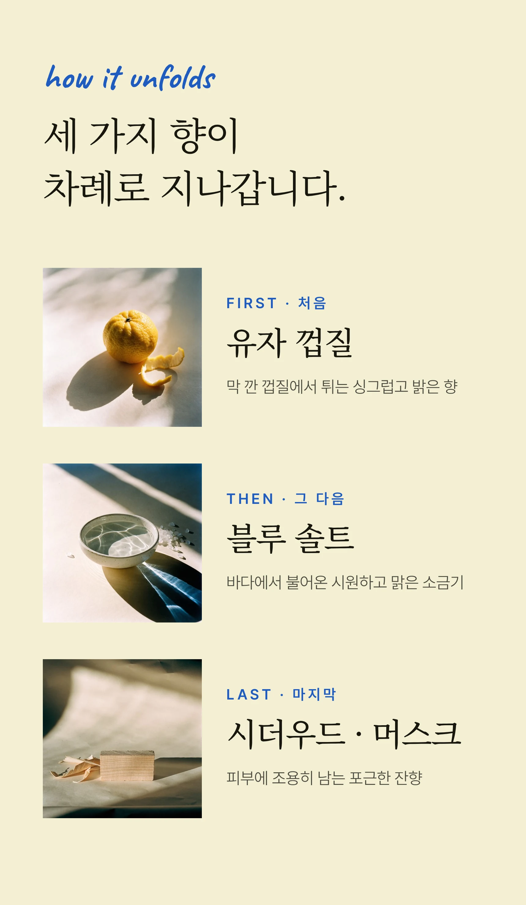
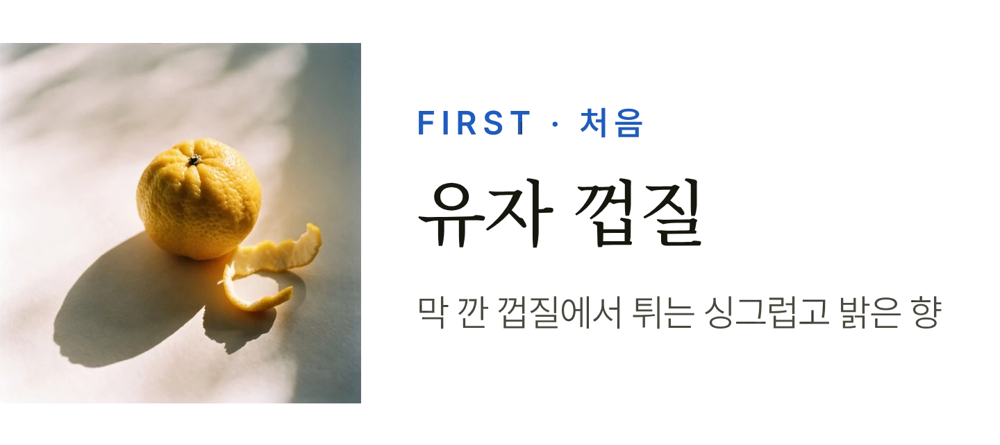
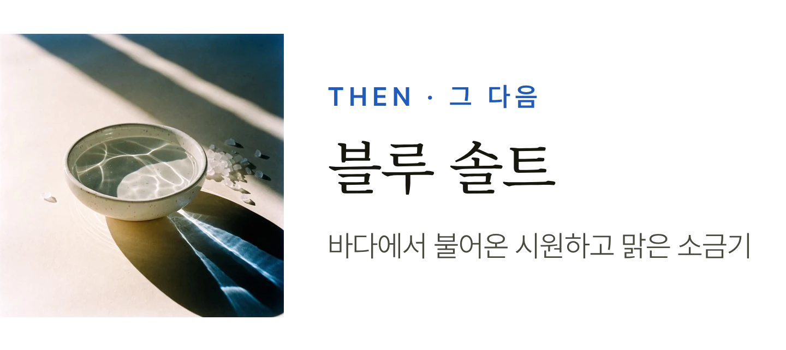
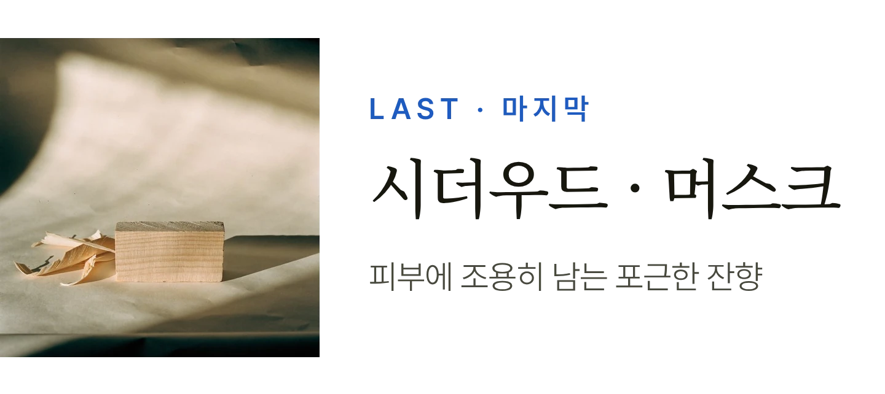
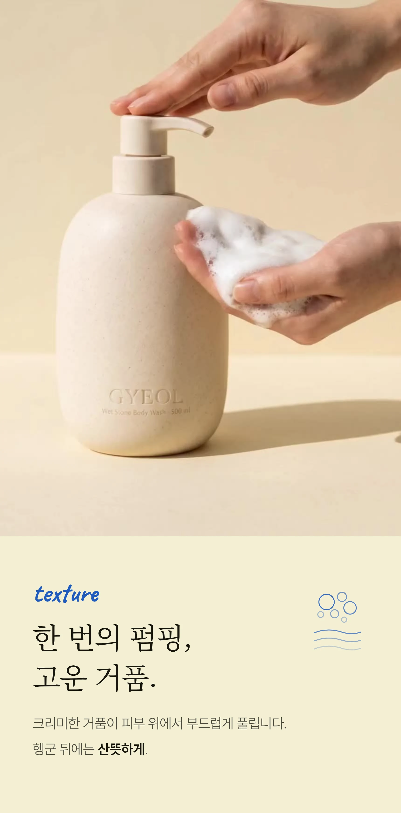
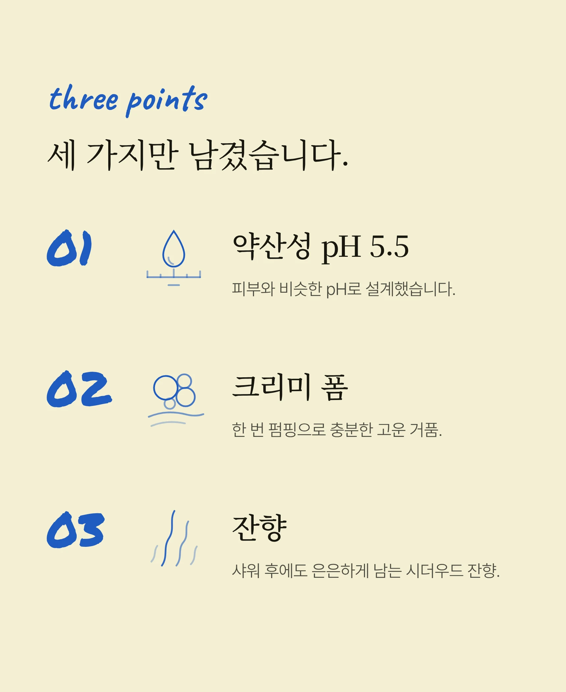
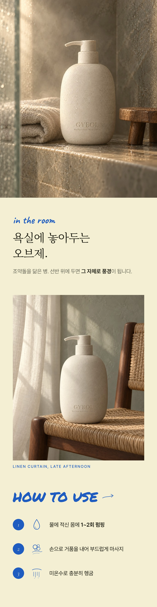
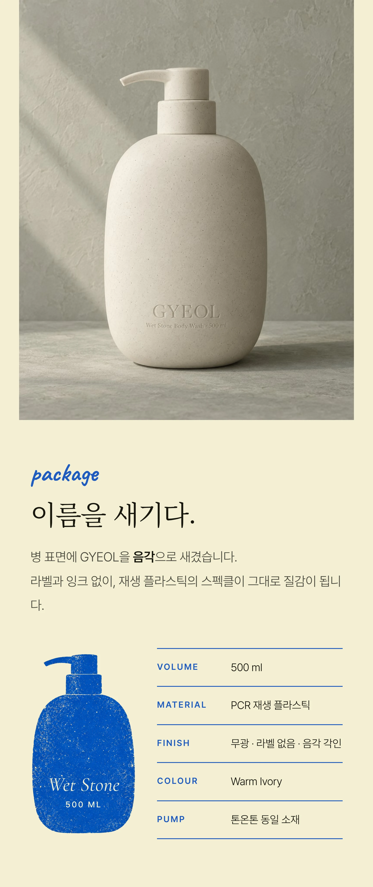
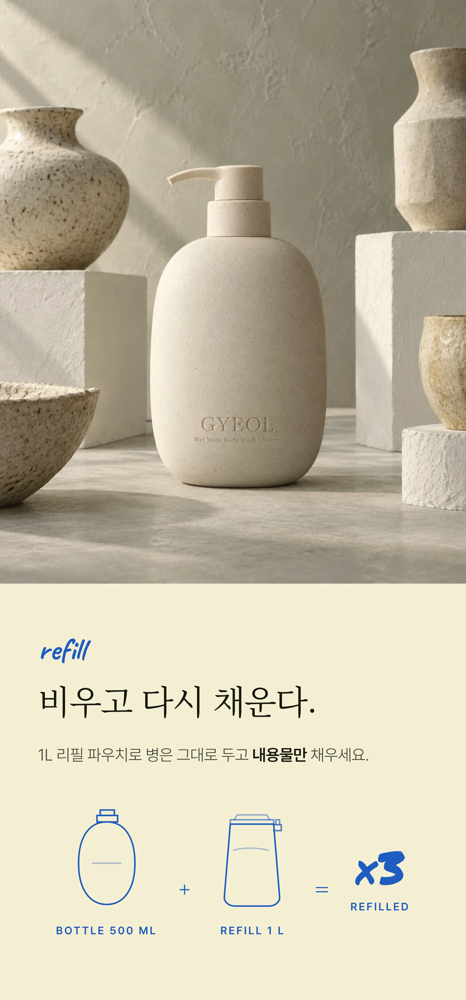
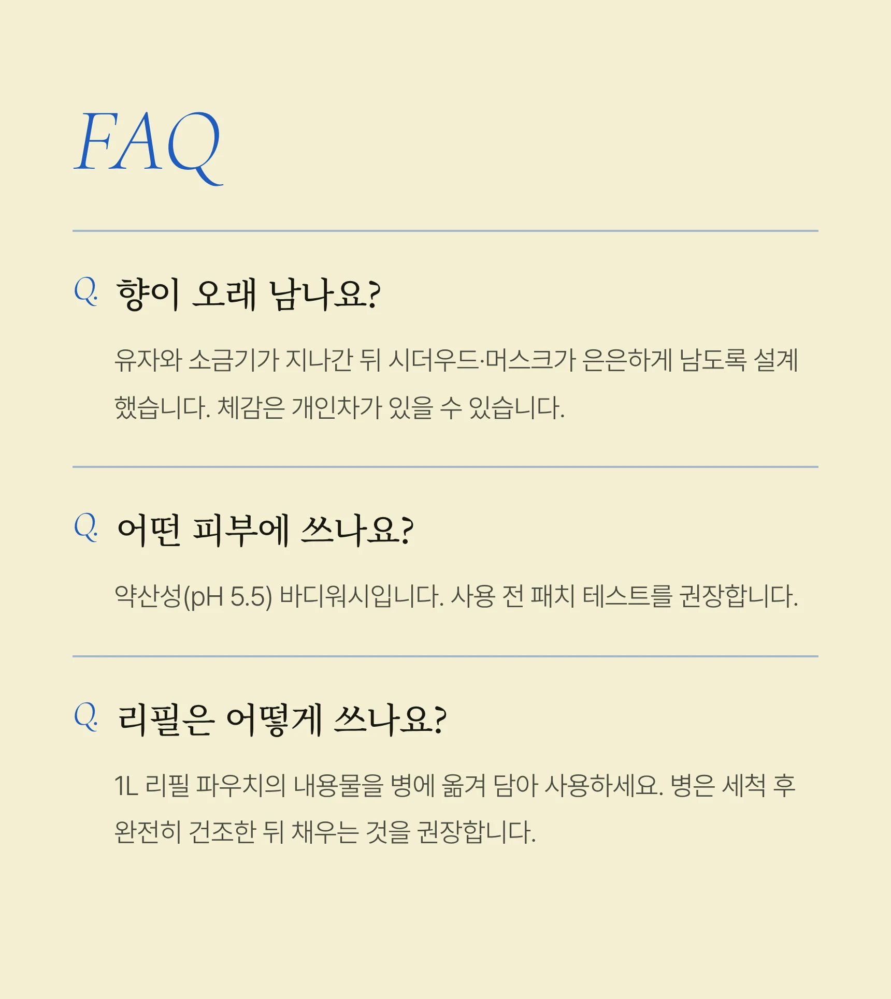
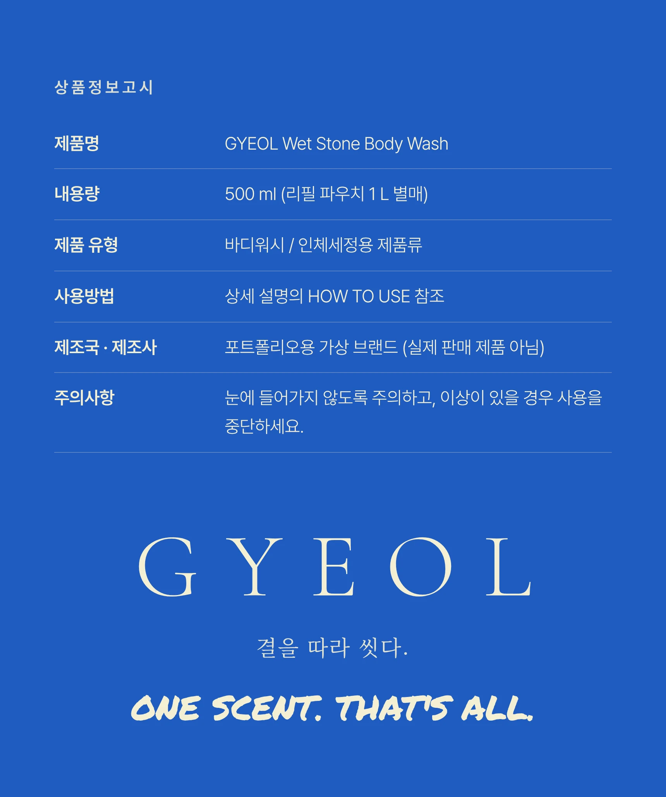